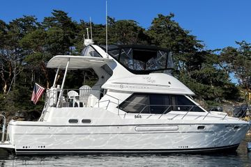

B-Scout Boat Guide · BAYL-4087
Bayliner 4087 Cockpit Motor Yacht Cockpit Motor Yacht
1996–2002
The Bayliner 4087 Cockpit Motor Yacht is a cockpit version of the 3587 platform with three sleeping cabins, an aft owner cabin and twin inboard propulsion. It combines motor-yacht accommodation with easier cockpit boarding and water access, but the added cabins and systems leave limited engine-room working space.

- Length
- 41.42 ft
- Beam
- 13.08 ft
- Draft
- 3.75 ft
- Hull behaviour
- Planing
- Fuel
- Gasoline
- Propulsion
- Shaft
- Engine configuration
- Twin Inboard
- Boat family
- Motor Yacht
- Construction
- Fiberglass
Best for
- Families needing three separate sleeping areas
- Extended inland and coastal cruising
- Owners wanting aft-cabin privacy plus a cockpit
Trade-offs
- Engine room is tight
- Three-cabin arrangement creates complex interior circulation
- Twin engines and multiple heads increase systems burden
- High bridge clearance limits some waterways and storage options
Known concerns
- No model-specific concern has been promoted to B-Scout’s evidence threshold. This does not mean the model has no age-, condition- or hull-specific risks.
Inspection focus
- Both engines, transmissions, shafts and cooling systems
- Engine-room access and serviceability
- Fuel, water and sanitation tanks
- Aft-cabin, deck and window moisture
Continue researching
Related boat models
Bayliner 3788 Motor Yacht Two-Generation Flybridge Motor Yacht
39.33 ft · Planing
Bayliner 3870 / 3888 Motor Yacht Mid-Cabin Flybridge Motor Yacht
38.17 ft · Semi-Displacement
Bayliner 3388 Motor Yacht Flybridge Motor Yacht
32.92 ft · Semi-Displacement
Bayliner 3270 / 3288 Motor Yacht Explorer / Motor Yacht
32.08 ft · Semi-Displacement
Silverton 352 Motor Yacht SideWalk Motor Yacht
41.33 ft · Planing
Sea Ray 390 / 40 Motor Yacht Flush-Deck Motor Yacht
41.75 ft · Planing
About this record
B-Scout preserves uncertainty: missing information remains unknown rather than being treated as a negative. Specifications and guidance describe the model record; individual boats can differ by year, equipment, refit and condition.